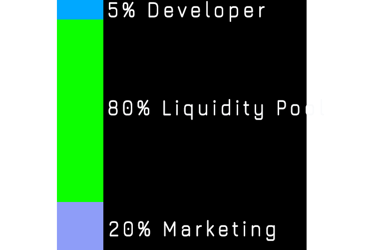

WHITEPAPER
The Pieces Network is a groundbreaking initiative designed to revolutionize Pieces.Network through innovative blockchain technology. Our primary goal is to address the inherent challenges and inefficiencies within the current Pieces.Network landscape, offering a decentralized and transparent solution. Through the implementation of cutting-edge blockchain protocols, Pieces Network aims to redefine the way Pieces.Network operates, ensuring trust, security, and efficiency.
Decentralization
Pieces Network leverages the power of decentralized networks to eliminate central points of failure, providing a trustless environment for Pieces.Network participants.
Token Utility
The $PCS serves as the lifeblood of our ecosystem, facilitating seamless transactions, incentivizing user participation, and fostering community engagement.
Privacy and Security
We prioritize the privacy and security of our users, implementing robust cryptographic techniques to safeguard sensitive information and transactions.
Scalability
Pieces Network is designed to scale efficiently, ensuring that as the user base grows, the platform's performance remains optimal and responsive.
Goals
At Pieces Network, our overarching goals are centered around empowering participants in the Pieces.Network. Through the implementation of decentralized solutions, we seek to provide individuals and entities within the Pieces.Network with a platform that prioritizes autonomy, fairness, and accessibility. By driving innovation and pushing the boundaries of what is possible, we aim to position ourselves as pioneers in technological advancements within the Pieces.Network space. Our commitment extends to fostering global accessibility, breaking down geographical barriers, and fostering inclusivity on a global scale. In essence, Pieces Network aspires to create a sustainable and transformative impact, redefining the landscape of the Pieces.Network through a fusion of advanced blockchain technology and a dedication to our core principles.
PIECES TOKENOMIC
Our team has taken into account all the needs that we have planned together with in-game economic experts, so that this community will continue to grow with improvements in all aspects, here is the distribution plan in terms of quantity and usage.

Developer
As developers, our commitment to transparency and sustainable growth is reflected in our tokenomics. We allocate 5% of the token supply to support various essential aspects of the project. This allocation serves to compensate our dedicated development team, ensuring ongoing project maintenance and improvement. A portion is dedicated to fueling the project's growth, facilitating future developments and expansions. Additionally, we prioritize community engagement by reserving tokens for incentives, rewarding early adopters, supporters, and contributors. Marketing efforts to promote the project and attract new users are funded through a percentage of the token allocation. Strategic partnerships and collaborations within the crypto space are fostered by allocating tokens for such initiatives. Furthermore, a reserve fund is maintained to address unforeseen challenges, market fluctuations, and unexpected expenses. We believe this comprehensive allocation strategy strengthens our project's foundation and contributes to its long-term success.
Liquidity Pool
As developers, we have strategically allocated 80% of our tokenomics to a robust Liquidity Pool (LP), reflecting our commitment to fostering a thriving and efficient trading environment for our native token. This substantial allocation ensures enhanced trading liquidity, reducing slippage and promoting a more stable token price. Beyond benefiting traders, our liquidity pool serves as a cornerstone for the project's ecosystem, facilitating seamless token swaps and encouraging user participation through incentivized liquidity provision. The availability of ample liquidity not only contributes to price stability but also opens doors to potential partnerships, integrations, and decentralized exchange listings. By prioritizing liquidity, we aim to create a dynamic and accessible marketplace for our community, fortifying the foundation of our project and fostering widespread adoption.
Marketing
As developers, we recognize the paramount importance of marketing in driving the success of our project, and to underscore this commitment, we have allocated 15% of our tokenomics to strategic promotional efforts. This dedicated marketing allocation serves as a catalyst for community growth, expanding our reach to a broader audience and fostering a vibrant and engaged user base. Through comprehensive marketing initiatives, we aim to build strong brand awareness, positioning our project as a trusted and recognizable entity in the crypto space. This not only enhances our token's adoption by showcasing its unique features and value proposition but also opens doors to valuable partnerships and collaborations within the industry. By allocating resources to marketing, we endeavor to secure listings on prominent exchanges, increase liquidity, and attract a diverse community of traders and investors. Our commitment extends beyond mere promotion; we prioritize community engagement through educational initiatives, events, and incentives, fostering a loyal and informed user base. In a competitive market, our strategic marketing approach aims to differentiate our project, ensuring its competitiveness and sustained growth.
PIECES ROADMAP
Phase 1
Open Testnet
Website Deployment
Social Media Create
Launcpad Join
Creating Liquidity Pool
Phase 2
Mainnet is Life!!
PCS Market Update (apps)
Add more SPL
100,000 MC
CEX Listing
Phase 3
More Airdrops
Apps Development
More CEX Listing
Another Project Join
10,000,000 MC


 Download
Download